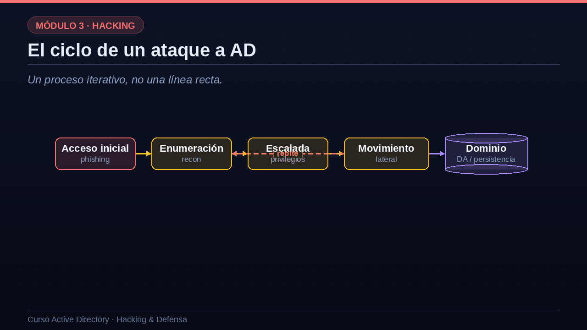

01El ciclo de un ataque a AD
Un proceso iterativo, no una línea recta.
Veamos el ciclo completo de un ataque. Todo empieza con el acceso inicial, que casi siempre llega por phishing: un empleado abre un adjunto malicioso y el atacante consigue ejecutar código en su equipo, con sus privilegios normales. A partir de ahí comienza un ciclo que se repite: enumerar para entender el terreno, escalar privilegios donde se pueda, y moverse lateralmente a otros equipos. Fíjate en la flecha roja de vuelta: no es una línea recta, es iterativo. Cada vez que el atacante compromete una cuenta nueva, vuelve a enumerar con esos nuevos permisos, descubre nuevos caminos, escala un poco más y salta de nuevo. Este bucle se repite hasta alcanzar el objetivo final: convertirse en administrador del dominio y asegurar la persistencia. Comprender este ciclo es clave, porque la defensa consiste en romperlo en cualquiera de sus eslabones.

02La enumeración lo es casi todo
Un atacante paciente dedica la mayor parte del tiempo a mirar, no a explotar.
Hay una verdad incómoda para los defensores: la enumeración lo es casi todo. Un atacante competente dedica la mayor parte de su tiempo a observar, no a lanzar exploits ruidosos. ¿Qué busca? Primero, usuarios y grupos: quién existe en el dominio, quién es administrador, qué cuentas están inactivas u olvidadas. Segundo, equipos y servicios: qué servidores hay, qué cuentas de servicio con SPN existen, qué sistemas operativos corren. Tercero, y aquí está el oro, los permisos y las relaciones: las ACL, las delegaciones y las pertenencias a grupos que, encadenadas, forman caminos hacia el privilegio. Y cuarto, las políticas y los recursos: las GPO, los recursos compartidos de red y los secretos que alguien dejó olvidados en un script. Lo fascinante es que casi toda esta información es legible por cualquier usuario del dominio, sin necesidad de ser administrador.
- Usuarios y gruposQuién existe, quién es administrador, quién está inactivo.
- Equipos y serviciosServidores, cuentas de servicio, SPN y sistemas operativos.
- Permisos y relacionesACL, delegaciones y pertenencias que crean caminos de ataque.
- Políticas y recursosGPO, recursos compartidos y secretos olvidados.
03Enumeración básica con herramientas
Desde una cuenta de dominio normal se obtiene muchísima información.
Veamos la enumeración en acción con algunas herramientas de referencia. Con CrackMapExec, una navaja suiza del pentesting de AD, podemos validar unas credenciales contra toda una subred y ver en qué equipos funcionan y qué recursos compartidos exponen; cuando aparece el mensaje Pwned, significa que esa cuenta es administradora local en ese equipo. Con herramientas como windapsearch podemos volcar por LDAP la lista completa de usuarios del dominio, fíjate en que aparecen cuentas de servicio como svc guion sql, muy interesantes. Y con bloodhound guion python recolectamos de una sola vez todo el grafo del dominio: usuarios, equipos, grupos y, sobre todo, las relaciones entre ellos, para analizarlo después. Lo importante que debes retener es que todo esto se ha hecho con una cuenta de usuario normal y corriente, sin privilegios especiales. Esa es la magnitud del problema de visibilidad en Active Directory.
# Validar credenciales y enumerar con CrackMapExec crackmapexec smb 10.0.0.0/24 -u ana -p 'Passw0rd' --shares [+] empresa.local\ana (Pwn3d! en 3 equipos) # Volcar todos los usuarios del dominio por LDAP python3 windapsearch.py -d empresa.local -u ana -U ana, carlos, svc_sql, svc_backup, admin_dom ... # Recolectar el grafo completo para BloodHound bloodhound-python -d empresa.local -u ana -p 'Passw0rd' -c All Recolectados 340 usuarios, 55 equipos, 120 grupos
04El arsenal del pentester de AD
Conviene que conozcas el arsenal clásico, porque lo iremos usando en las próximas lecciones. CrackMapExec, y su sucesor NetExec, para barridos de credenciales, recursos compartidos y ejecución remota. BloodHound, para construir el grafo de caminos que llevan hasta administrador de dominio; lo veremos en detalle en su propia lección. Impacket, una suite de scripts en Python que implementa casi todos los ataques de Kerberos, SMB y DCSync. Rubeus, la herramienta de referencia para ataques Kerberos desde un equipo Windows. Mimikatz, el rey del robo de credenciales de la memoria. Y PowerView, para enumerar el dominio cómodamente desde PowerShell. No necesitas dominarlas todas hoy; basta con que reconozcas sus nombres y sepas a qué fase del ataque pertenece cada una. Las iremos activando conforme avancemos.
| Herramienta | Para qué sirve |
|---|---|
| CrackMapExec / NetExec | Barrido de credenciales, shares y ejecución |
| BloodHound | Grafo de caminos hacia Domain Admin |
| Impacket | Suite de scripts: Kerberos, SMB, DCSync |
| Rubeus | Ataques Kerberos desde Windows |
| Mimikatz | Robo de credenciales de memoria |
| PowerView | Enumeración de AD desde PowerShell |
05Enumeración: cómo detectarla y frenarla
Como siempre en este curso, veamos también el lado defensivo. ¿Se puede detectar la enumeración? Sí, aunque es difícil, porque usa funciones legítimas. Hay señales reveladoras: un equipo que lanza consultas LDAP masivas, pidiendo prácticamente el directorio entero de golpe, o que realiza barridos conectándose a decenas de equipos en pocos minutos para buscar sesiones y recursos compartidos. Esos patrones, vistos en un SIEM, son sospechosos. Para dificultarla, hay dos medidas potentes. Una es reducir la visibilidad: endurecer los permisos para que un usuario estándar no pueda leer tanto del directorio, aunque hay que hacerlo con cuidado para no romper aplicaciones. La otra, muy elegante, son los señuelos o honeytokens: cuentas y objetos trampa, aparentemente jugosos, que nadie legítimo debería tocar jamás; en el momento en que alguien los consulta o intenta usarlos, salta una alerta de alta fiabilidad. Los veremos en el módulo de detección.
Señales en el lado defensivo
- Consultas LDAP masivasUn equipo pidiendo el directorio entero de golpe.
- Barridos de sesiones y sharesConexiones a muchos equipos en poco tiempo.
Medidas que lo dificultan
- Reducir visibilidadLimitar qué puede leer un usuario estándar por LDAP.
- Señuelos (honeytokens)Cuentas trampa que alertan si alguien las toca.
06Resumen de la lección
Recapitulemos esta introducción al hacking de AD. Un ataque no es una línea recta, sino un ciclo que repite acceso, enumeración, escalada y movimiento lateral hasta alcanzar el control del dominio. La enumeración es la fase decisiva, y resulta inquietante lo mucho que un simple usuario del dominio puede averiguar. Hemos conocido el arsenal estándar que usaremos: CrackMapExec, BloodHound, Impacket, Rubeus, Mimikatz y PowerView. Y hemos visto que, aunque silenciosa, la enumeración deja rastros detectables y puede entramparse con señuelos. En la próxima lección atacaremos por primera vez a Kerberos, con dos técnicas que solo necesitan una cuenta de dominio: el AS-REP Roasting y el Kerberoasting. Nos vemos en la lección nueve.
- El ataque es un cicloAcceso, enumerar, escalar y moverse; se repite hasta el dominio.
- La enumeración es la claveCasi toda la información es legible por un usuario normal.
- Un arsenal estándarCrackMapExec, BloodHound, Impacket, Rubeus, Mimikatz, PowerView.
- Se puede detectarConsultas LDAP masivas, barridos y honeytokens.